- Big Burguer Soledade Nota: 3.8★
- Pizzaria da Fabiana Nota: 3.4★
- Mega Lanches Soledade Nota: 2.7★ 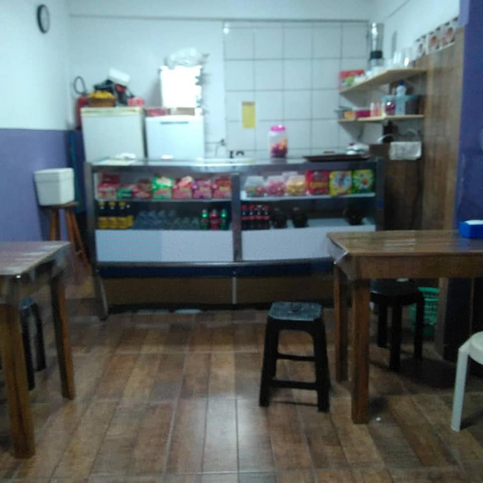
- Big's Burguer São Lourenço Nota: 3.6★ 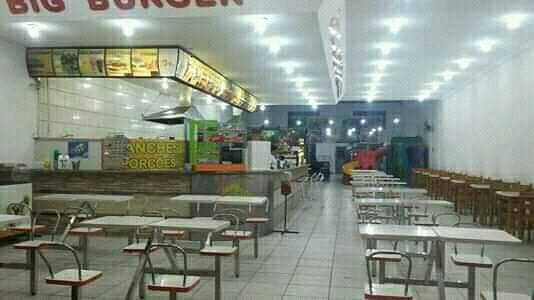
- Tia Dina Nota: 2.5★
- Padaria São Lourenço Nota: 3.8★
- Lanche do Ciro Nota: 4.0★ 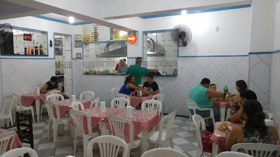
- Mamma Mia Pizzaria Nota: 4.3★ 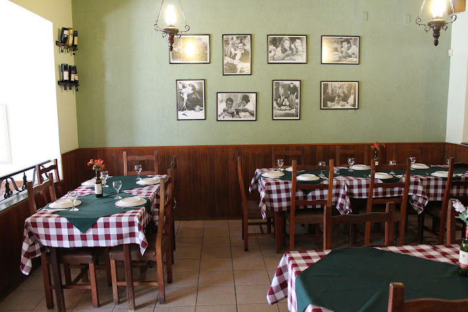
- Ki gelo Nota: 3.1★ 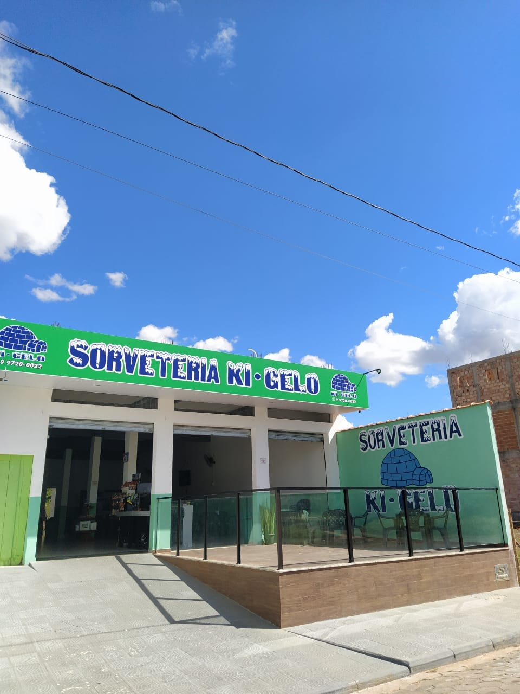
- Sorveteria Rbom Nota: 4.3★ 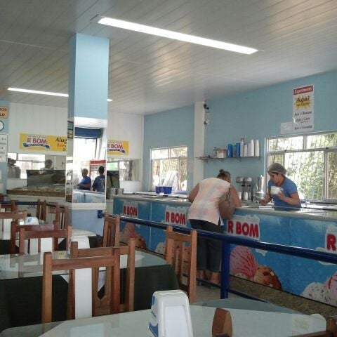
- Esquina do Mineiro Nota: ★
- Sol e Neve Nota: ★ 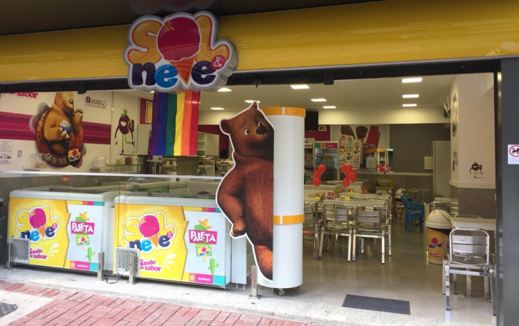
- Ki Sabor Nota: ★ 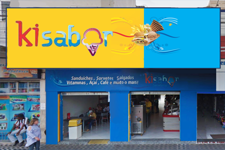
- Paladar Mineiro Nota: ★ 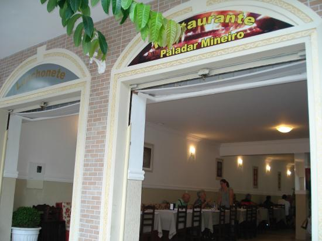
- Restaurante Coreto Nota: ★
- McNic Hamburger Nota: ★ 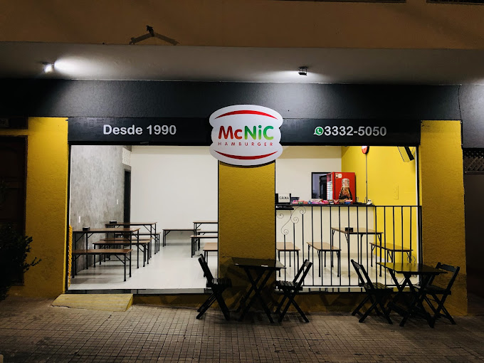
- Lanchonete do Chinês Nota: ★
- Kero Mais Nota: ★
- Restaurante da Glória Nota: ★
- Rei do Pernil Nota: ★
- Amarelinho Nota: ★
- Vila do Açai Nota: ★
- Ki Beleza Nota: ★ 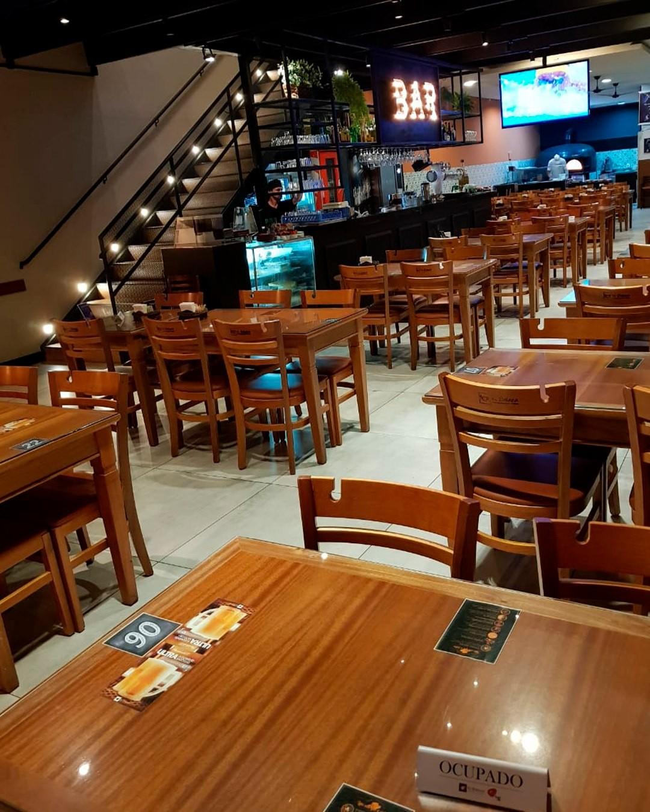
- San Remo Nota: ★ 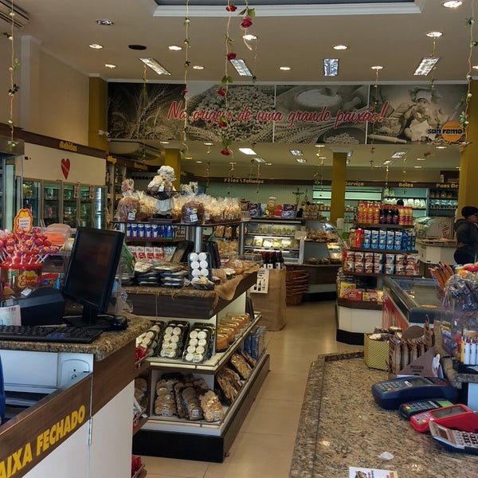
- Bar do Ponto Nota: ★ 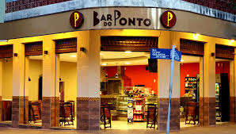
- Restaurante Gospel Nota: ★ 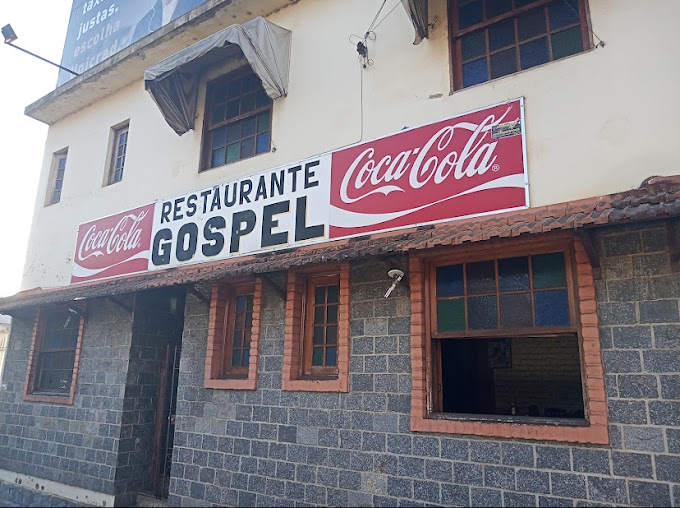
- Casa da Empada Nota: ★
- Molinari Nota: ★